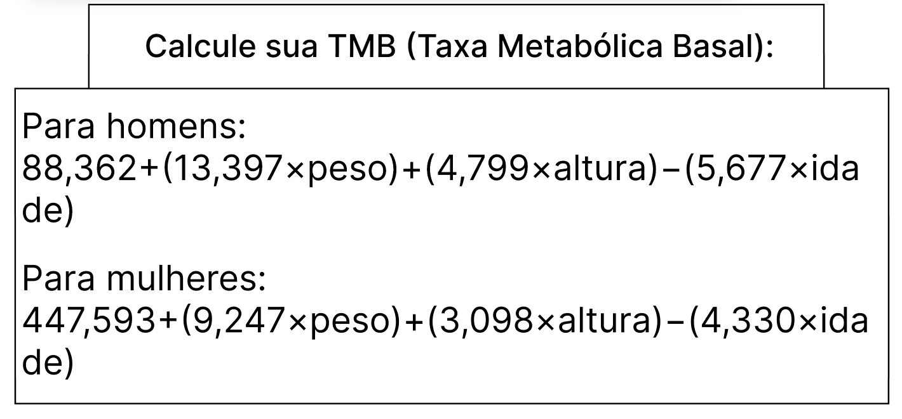

Desvende Seu Déficit Calórico
E aí, galera! Se você está pronto para adentrar ao universo do emagrecimento e entender como descobrir seu déficit calórico de forma manual, vamos tornar tudo claro. Esqueça os aplicativos, e aprenda a descobrir seu TMB (Taxa Metabólica Basal) e TDEE (Gasto Energético Total) de maneira personalizada. Vamos lá!
Mas antes de tudo você que não sabe o que é TMB e o que é TDEE eu irei dar uma breve explicação
TMB:
A Taxa Metabólica Basal representa a quantidade mínima de energia que o corpo necessita em estado de repouso absoluto para realizar as funções fisiológicas essenciais, mantendo-se vivo. Essas funções incluem a manutenção da temperatura corporal, a respiração, a circulação sanguínea, a produção de células e tecidos, a regulação hormonal e outras atividades metabólicas vitais.
Imagine que você está deitado, em completo descanso, sem realizar nenhuma atividade física adicional. Mesmo nesse estado, seu corpo continua a queimar calorias para manter o funcionamento adequado de órgãos vitais e processos biológicos. A TMB é, portanto, um reflexo do gasto energético básico necessário para sustentar a vida, independentemente das atividades diárias.
TDEE:
Certamente! TDEE é uma abreviação para Total Daily Energy Expenditure, que em português significa Gasto Energético Diário Total. O TDEE representa a quantidade total de calorias que uma pessoa queima em um dia, levando em consideração não apenas a Taxa Metabólica Basal (TMB), mas também as calorias gastas durante atividades físicas e outras atividades diárias.
O TDEE é uma métrica crucial ao planejar dietas, seja para perda, manutenção ou ganho de peso. Ele é calculado multiplicando-se a TMB pelo fator de atividade física. Este fator leva em consideração o nível geral de atividade de uma pessoa ao longo do dia. Existem diferentes escalas de fatores de atividade que variam de sedentário (pouca ou nenhuma atividade física) a altamente ativo (atividade física intensa).
Agora que você já sabe o que são,vamos partir para os calculos.
O resultado que você achou é o que você gasta só estando respirando e etc,bom em outras palavras e o tanto que você gasta só para sobreviver.
Agora que você já achou o seu TMB você precisa achar o seu TDEE que é o tatal de energia que você gasta no seu dia a dia
Mas antes irei te passar uma tabela que irá te mostrar níveis de atividade fisicas e você tem que escolher uma delas com sinceridade e multiplicar pelo seu TMB que irá resultar no total de energia que o seu corpo gasta.

Tá agora que você ja sabi o seu nível de atividade física você vai fazer essa formula para ver o seu gasta total de energia.
Então, se você tiver sua TMB calculada usando uma das fórmulas que discutimos anteriormente, você multiplicaria esse valor pelo fator de atividade física apropriado com base em seu nível de atividade diária.
Por exemplo, se sua TMB for 1500 calorias e você for moderadamente ativo (fator de atividade física de 1,55), seu TDEE seria:
Portanto, neste exemplo hipotético, o seu TDEE seria de 2325 calorias por dia. Isso representa a quantidade estimada de calorias que você queimaria em um dia com base em sua taxa metabólica basal e nível de atividade física.
Como descobrir o seu percentual de gordura
Agora que você ja tem o seu TDEE só vai falta você descobrir o seu persentual de gordura,então irei te ensinar a descobrir
E muito facil,mais...
Para calcular o seu percentual de gordura corporal, você pode acessar o ”Body Fat Calculator” diretamente no navegador, ai só vai faltar pesquisar por “Body Fat Calculator” no Glogle e clicar no link correspondente. E eu peço desculpas por eu ter mencionado anteriormente que todas as informações seriam fornecidas manualmente, percebi que, para essa tarefa específica, precisaremos do auxílio do aplicativo.
Ao abrir o site, você encontrará uma interface para inserir suas informações pessoais, como sexo, idade, peso, altura. Este processo é essencial para os cálculos de estimativa.
O aplicativo online pode solicitar medições adicionais usando uma fita métrica. Homens podem precisar medir o pescoço e a cintura, enquanto mulheres podem ser solicitadas a medir pescoço, cintura e quadril.
Após inserir todas as informações e medidas, o aplicativo online realizará os cálculos necessários para estimar o percentual de gordura corporal.
Os resultados fornecidos pelo aplicativo online incluirão uma estimativa do seu percentual de gordura corporal, juntamente com possíveis interpretações. Lembre-se de que esta é uma estimativa e pode não ser tão precisa quanto métodos mais avançados.
Como se ver o tanto que comer por dia
Ao calcular o TDEE total considerando o percentual de gordura, seguimos os seguintes passos:
Iniciamos multiplicando o TDEE pelo percentual de gordura em formato decimal. Essa etapa nos proporciona uma estimativa da contribuição calórica do tecido adiposo para o gasto energético total.
Em seguida pegue o numero x da multiplicaçao e divida ele por 100, e transformando a contribuição da gordura em termos percentuais.
Finalizamos subtraindo o valor obtido na etapa anterior do TDEE total original, adaptando a ingestão calórica para refletir o percentual de gordura específico.
O valor final, TDEE total, representa a ingestão calórica ajustada considerando o percentual de gordura. Essa quantidade é crucial para estabelecer metas alimentares, determinar a quantidade de calorias que deve ser consumida diariamente e alcançar seus objetivos de déficit calórico ou manutenção.
Mais se por a caso você ainda não tenha entendido, irei te dar uma explicação na prática.
Vamo supor que o seu TDEE é de 2225 e o seu percentual de gordura sejá de 20%, e isso é bom porque agora você já tem o seu numeros definidos,vamos partir para explicação.
Essa é a formula para ver o tanto que você deve comer, na pratica para as pessoas que não entenderam.
Então agora que você já sabi o tanto que deve você comer, vá para o proxímo capitolo para você ver como calcular suas calorias para se manter em deficit